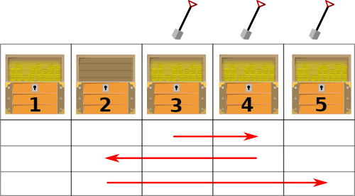

In what concerns the continuous evaluation solving exercises grade during the semester, you should submit until 23:59 of October 18th
(this exercise will still be available for submission after that deadline, but without couting towards your grade)
[to understand the context of this problem, you should read the class #02 exercise sheet]
After many years competing in programming contests, Sarah has finally retired. As a new challenge, she decides to become a treasure hunter! Her next target is a small island in the Pacific Ocean where there is is a straight line of N chests buried side by side. Some of these chests contain valuable treasures, which Sarah wants to collect.
At the beginning, Sarah is standing on chest number S. Then she follows a sequence of I instructions on an old map, which tell her to move left or right along the line of chests. Each instruction is either "move X steps to the right" or "move X steps to the left". A step to the right means moving to the next chest towards the east, and a step to the left means moving to the next chest toward west.
Moreover, whenever Sarah passes by a chest (even in the middle of executing an instruction), she digs out and opens it, collecting the treasure inside if there is one. Note that Sarah also digs out the chest at her initial starting position S.
For example, suppose there are N = 5 chests, and every chest except the 2nd one has a treasure. Sarah starts at position S = 3 and the map gives I = 3 instructions:
As she moves, she passes several chests and ends up collecting exactly 3 treasures, as shown on the following figure (collected treasures are marked with a shovel):

At the end of her journey, Sarah wants to know how many treasures she collected. But there are so many... can you help her count?
Given a line of N chests, the initial position S, and a list of I movement instructions, compute how many treasures Sarah collects.
The first line contains three integers: N (the number of chests), S (Sarah's initial position) and I (the number of instructions).
This is followed by a line with N characters that can be 'T' or 'E', where the i-th character represents the type of the i-th chest, 'T' for a Treasure chest and 'E' for an Empty chest (with no treasure).
This is followed by I lines, each with two integers D K, where D is a character that can be 'L' (left) or 'R' (right), representing the direction of movement, and K is an integer representing the number of steps to take.
Note: it is guaranteed that the instructions never force Sarah to leave the line of chests, i.e. her position will always be between 1 and N.
The output be a single line containing an integer representing the number of treasures collected by Sarah.
The following limits are guaranteed in all the test cases that will be given to your program:
| 1 ≤ N ≤ 100 000 | Number of chests | |
| 1 ≤ S ≤ N | Initial Position | |
| 1 ≤ I ≤ 100 000 | Number of instructions |
| Example Input 1 | Example Output 2 |
5 3 3 TETTT R 1 L 2 R 3 |
3 |
This first example corresponds to the figure in the problem statement.
| Example Input 2 | Example Output 2 |
10 5 9 TTTTETTTTT R 1 L 2 R 1 R 1 R 1 L 3 L 1 R 4 R 1 |
5 |
Please note that the number of steps in one instruction is not necessarily smaller than 10 and may contain more than one digit in other tests given to your program.